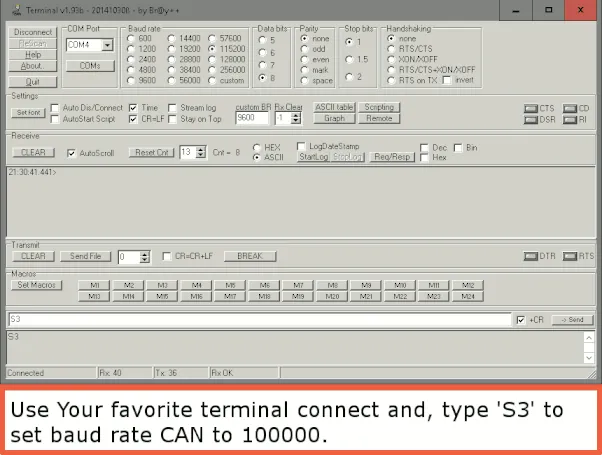
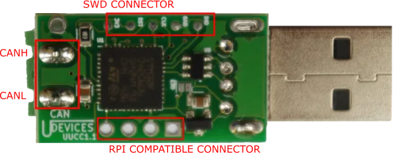
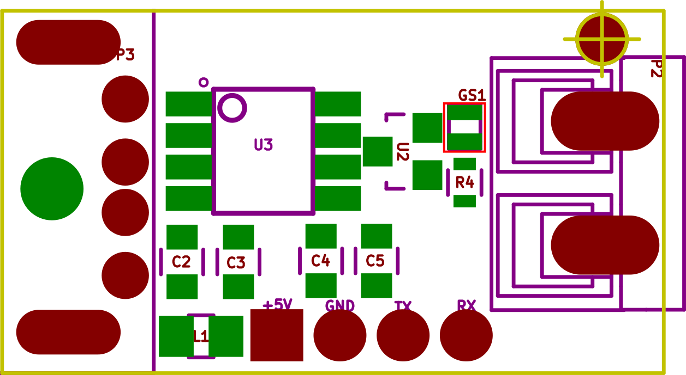
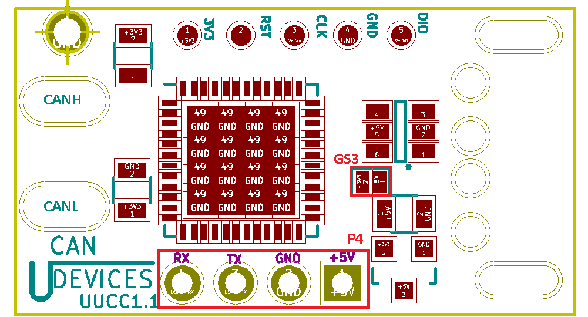
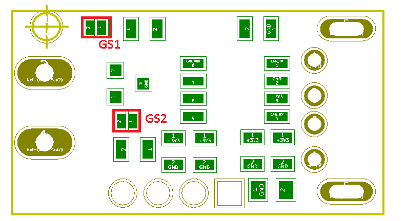
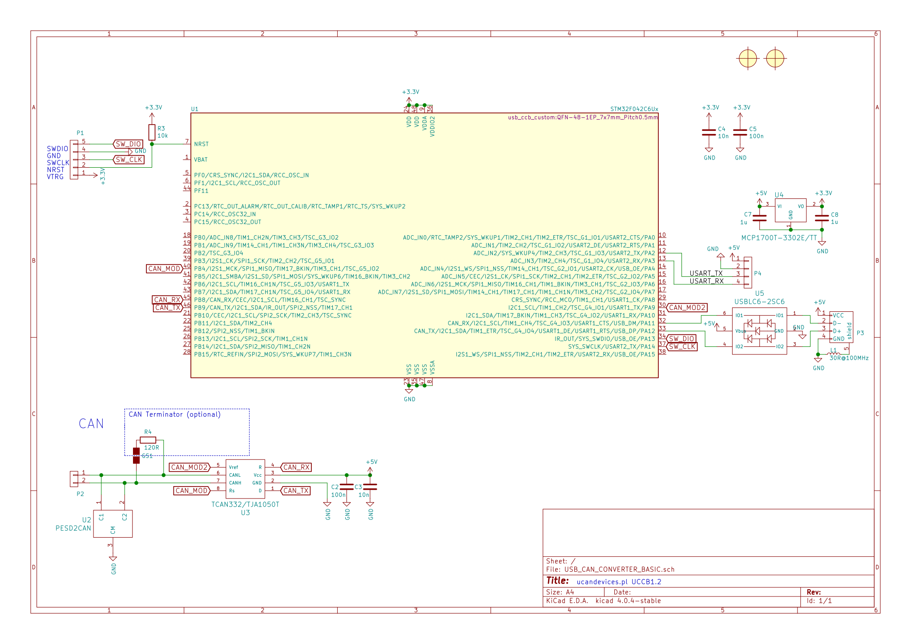
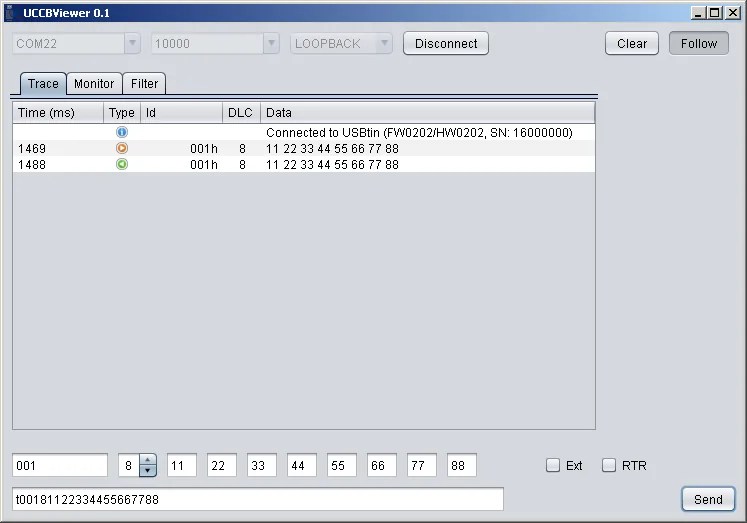

USB CAN Converter (UCCB)
Open source CAN bus to USB dongle. SLCAN compatible - works with Linux SocketCAN, python-can and most CAN tools.
Buy on Tindie Buy on Lectronz Source on GitHub
Product and its documentation is supplied on an as-is basis and no warranty as to their suitability for any particular purpose is either made or implied. Producer will not accept any claim for damages howsoever arising as a result of use or failure of this product. This product is not intended for use in any medical appliance, device or system in which the failure of the product might reasonably be expected to result in personal injury.
Description
Usb CAN Converter Basic(UCCB) works as CAN to UART converter. Two communications port exist, USB(virtual COM port) and side USART port with Raspberry Pi compatible pinout. UCCB can work both with PC or Your custom embedded device. Multiple features are supported like:

Device have support for USB DFU bootloader for new firmware upload see tutorial.

After USB enumeration device creates virtual COM port that is used both for data transfer and converter setup. Frames are send on USART only if no HOST is connected to USB. Device can be powered directly from USB or from the P4 port. To enable termination resistors GS1 jumper must be closed.

After USB enumeration device creates virtual COM port that is used both for data transfer and converter setup. Frames are send on USART only if no HOST is connected to USB. Device can be powered directly from USB or from the P4 port. UCCB can be also supplied from 3,3V to do this jumper GS3 must be sealed, use P4 5V pin to supply with 3,3V. If GS3 is sealed any use of USB will damage the device.Do not use USB if GS3 is sealed! Bottom board layout is shown below.

To enable termination resistors GS1 and GS2 jumpers must be closed.

Drivers
For proper work on Windows you need to install virtual com drivers from ST site or download from here .
COM port Commands
Below is list of all available commands. All those commands can be send by USB or P4 port USART. USART baud rate is 115200 For more details see SLCAN.c file in source codes. All commands are ASCI format. Each of commands is terminated with newline character CR (0xD). On error the USBtin responses with 0x7 value. To start CAN frame reception just type "O", for Open command. After reset device CAN speed is 1Mb/s with 75% sampling point.
| Command | Description |
| O | Enables frame reception. |
| C | Close CAN port on device, frame will not be received. |
| Sx | Sets baudrate x: Bitrate id (3-8) S3 = 100 kBaud S4 = 125 kBaud S5 = 250 kBaud S6 = 500 kBaud S7 = 800 kBaud S8 = 1 MBaud |
| V | Get hardware version. |
| v | Get firmware version. |
| N | Get serial number. |
| l | Open device in loop back mode. |
| L | Open device in silent, listen-only mode. |
| tiiildd | Transmit standard (11 bit) frame. iii: Identifier in hexadecimal format (000-7FF) l: Data length (0-8) dd: Data byte value in hexadecimal format (00-FF) |
| Tiiiiiiiildd | Transmit extended (29 bit) frame. iiiiiiii: Identifier in hexadecimal format (0000000-1FFFFFFF) l: Data length (0-8) dd: Data byte value in hexadecimal format (00-FF) |
| riiil | Transmit standard RTR (11 bit) frame. iii: Identifier in hexadecimal format (000-7FF) l: Data length (0-8) |
| Riiiiiiiil | Transmit extended RTR (29 bit) frame. iiiiiiii: Identifier in hexadecimal format (0000000-1FFFFFFF) l: Data length (0-8) |
| F | Read status/error flag of can controller |
| MnnbbfiiiiiiiiI mmmmmmmmF |
M: Set acceptance filter mask. nn: filter number 0-1B bb: bank number 0-1B f: filter flags I: id flags F: flags for mask same as I |
Example workflow
000005: C (send close command)
000006: v (ask for firmware version)
000007: v0102 (get version number from device)
000008: V (ask for hardware version)
000009: V0101
000010: N
000011: N16000000
000012: W2D00
000013:
000014: S8 (set speed to 1000000 b/s)
000015:
000016: O (open CAN for frame transmission and reception)
000017:
000018: t00181122334455667788 (transmit frame type standard id = 1 length 8 bytes)
000019: z
000020: t0890
000021: M00007000000010000000010 (set id filter for ID=1 and ID=1)
Example workflow
Example 1, ignore all extended CAN packetsM0000500000000000000000FExample 2, delete all filters
MdExample 3, If You would like to have ids from 0x600-0x7FF then : You need two separate filters one for 0x600 (in bank 0 )2nd for 0x700 ( in bank 1) so enter two command like this
M0000500000600000000F000 M0100500000700000000F000If only 0x600 - 0x6FF then
M0000500000600000000F000
Hardware
We are using STM32F0 microcontroller. Device PCB is designed in ki-cad. All source files are available in github here.

Software
Converter software is pure C code written in free version of Atollic studio. All sources and releases with compilation instructions are available in our github here.
Production files:
newest version
There is also firmare that supports Linux GSUSB driver. For more info see Tools page.
Uploading new software
UCCB have got embedded DFU USB bootloader. To upload new firmware use STM32CubeProgrammer software supplied by ST microelectronics. To upload new firmware follows those steps:
boot device should reset and new device should connect to Your pc\DfuSe v3.0.5\Bin\Driverfolder
 Additional info on DFU can be found in ST UM0412 User manual.
Additional info on DFU can be found in ST UM0412 User manual.
Under Linux you can also use dfu-utils software example command
dfu-util --dfuse-address -d 0483:df11 -c 1 -i 0 -a 0 -s 0x08000000:leave -D MyBinary.bin
In case You have gsusb software to enter dfu mode use
dfu-util -e
Tools
You can use UCCB on any operating system with serial terminal program like for example putty. Description of all available commands can be found in About section. UCCB have its own terminal written in JAVA, uCCBViewer.
Tools list:UCCBViewer is GUI program for USBCanConveterBasic device. uCCBViewer functionalities are: frame reception, transmission, filtering, listen-only or loopback configuration. To run this program Java Runtime Enviroment(JRE) needs to be installed.
To run UCCBViewer on Linux remember to run this program as superuser. sudo java -jar uCCBViewer-2.1.jar
Download newest release
Sources for UCCBViewer
uCCBlib is JAVA library for CAN converter.
Download UCCBLib_v1.2.jar (2016-11-21)
Sources for UCCBlib
python-can libray is supporting UCCB for capabilities of python tools see this tutorial
pyUSBtin is python Library that partialy works with UCCB (filtering not working). Library can be found on https://github.com/fishpepper/pyUSBtin.
JAVA SCRIPT tools are under development.
UCCB has alternative firmware for that implments the gs_usb protocol. This is supported by the mainline Linux kernel and SocketCAN. It does not require use of slcand and should be more reliable at high bitrates. For this reason, GSUSB is recommended if you are only using UCCB on Linux. The GSYSB firmware was written by Hubert Denkmair, and is released under the MIT license. The source code is available on Github. Thanks to Hubert for his work on this project! To see how to flash new firmware look to Sources tab.
UCCB_GSUSB firmware hex files
To use UCCB with GSUSB You need upload new software. Binaries can be found GitHub Release. Sources are on GitHubUsing UCCB_GSUSB firware
Ensure the gs_usb kernel module is enabled:
sudo modprobe gs_usbConnect device to USB, and check if initialized properly
sudo modprobe can_dev
ip link listThere should be sth like this
10: can0: NOARP,ECHO mtu 16 qdisc noop state DOWN mode DEFAULT group default qlen 10 link/canConnect UCCB device to CAN network.
Configure the device:
sudo ip link set can0 type can bitrate 500000Replace can0 with the name of your device, and 500000 with the desired bitrate.
Bring the device up:
sudo ifconfig can0 up
Use the device with SocketCAN. For example, candump can0. See SocketCAN for more information.
CsharpUSBtinLib is c# Library that partially works with UCCB (filtering not working). Library can be found on https://github.com/leonel85/CsharpUSBtinLib.
Full support C# tools are under development.
UCCB is compatible with official Linux CAN implementation. Here is step by step guide on UBUNTU:
Load kernel modules
$ sudo modprobe can $ sudo modprobe can-raw $ sudo modprobe slcan
Discover serial device name
If You plug it by USB port it should be something like ttyACM0. If you connect it by side UART connector you should use one of Your existing serial ports ttyS1 or ttyUSB if you are using usb to serial adapter.
CAN-utils compilation
This is done only once. You need to have git installed. If you have one ignore first line
$ sudo apt-get install git $ git clone https://github.com/vitroTV/can-utils.git $ cd can-utils $ make
Start CAN interace
See options for slcan_attach by executing
$ ./slcan_attach
You should get
Options: -o (send open command 'O\r') -l (send listen only command 'L\r', overrides -o) -c (send close command 'C\r') -f (read status flags with 'F\r' to reset error states) -s speed (set CAN speed 0..8) -b btr (set bit time register value) -d (only detach line discipline) -w (attach - wait for keypess - detach) -n name (assign created netdevice name) Examples: slcan_attach -w -o -f -s6 -c /dev/ttyS1 slcan_attach /dev/ttyS1 slcan_attach -d /dev/ttyS1 slcan_attach -w -n can15 /dev/ttyS1
s0..8 stand for bound rate from 10Kbps to 1Mbps for sampling point 75%. See source code or slcan documentation for details.
Example with opening for 250Kbs speed connected to ttyACM0.
$ sudo ./slcan_attach -f -s5 -o /dev/ttyACM0 attached tty /dev/ttyACM0 to netdevice slcan0 $ sudo ./slcand ttyACM0 slcan0 $ sudo ifconfig slcan0 up
Test CAN-utils
There is several features of CAN-utils see folder contests and check all executables for description here are examples.List all received CAN messages.
$ ./candump slcan0
Wireshark support
For CAN frame analysis You can use Wireshark. This works only on Linux. To install Wireshark type:$ sudo apt-get install WiresharkAfter installation run Wireshark, "slcan0" interface should be visible and You are ready to go!
Known Issues
If You get timeout message on connecting to ttyACM then try to remove modemmanager.
sudo apt-get --purge remove modemmanager
UCCB protocol is based on usbtin, some tools from usbtin web site should also work.